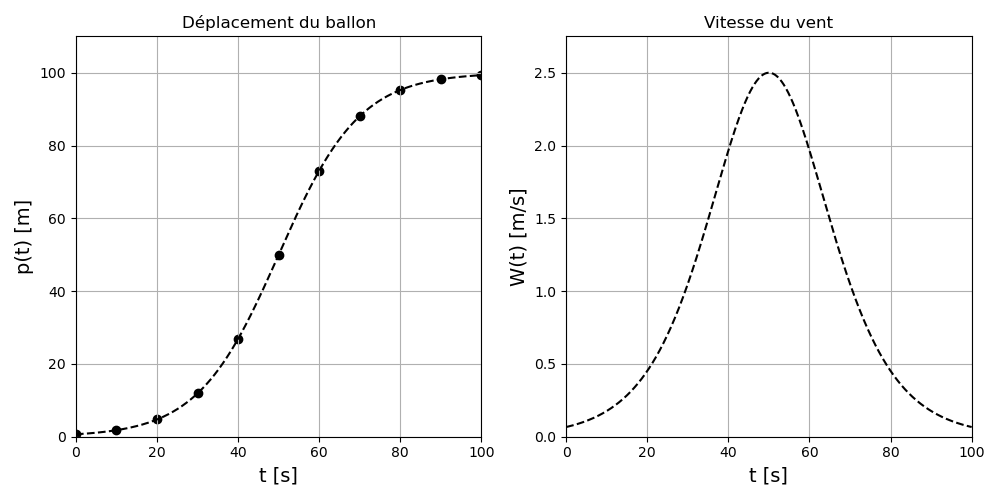

Chapitre I : Introduction aux méthodes numériques
Ce chapitre est une introduction aux enjeux des méthodes numériques.

Dans le célèbre roman de science-fiction humoristique anglais "The Hitchhiker's Guide to the Galaxy", écrit en 1978 par Douglas Adams, des extra-terrestres construisent un superordinateur du nom de "Deep Thought" et lui posent le problème suivant :
"O Deep Thought computer, [...] the task we have designed you to perform is this. We want you to tell us the Answer [...] to Life, the Universe and Everything".
L'ordinateur leur répond alors :
"I can do it [...] but I'll have to think about it. [...] Seven and half million years."
7,5 millions d'années plus tard, les descendants des créateurs de Deep Thought viennent consulter l'ordinateur pour obtenir leur réponse. Deep Thought dit qu'il a bien la réponse, mais les prévient :
"I don't think [...] that you're gonna like it".
Les extra-terrestres insistent pour avoir la réponse. Deep Thought s'exécute :
"The Answer to the Great Question [...] of Life, the Universe and Everything [...] is ... 42".
Les extra-terrestres sont en colère face à cette réponse, et demandent à l'ordinateur s'il est bien sûr qu'il n'y a pas une erreur. Ce à quoi Deep Thought répond qu'il est certain que la réponse est correcte, et que s'ils ne l'aiment pas, c'est parce que leur problème était mal posé.
Cette blague aujourd'hui passée à la postérité fait écho aux enjeux des méthodes numériques que nous allons voir dans ce chapitre...
Nous allons détailler dans ce chapitre les différentes étapes de résolution d'un problème en Physique, avec un exemple simple.
Le problème
Un groupe d'étudiants de l'UVSQ réalise un projet de ballon sonde pour mesurer la vitesse du vent dans la stratosphère au cours du temps. On considère qu'après une phase d'ascension, leur ballon a atteint une altitude stable dans la stratosphère, et que son déplacement est uniquement lié au vent. La nacelle de leur ballon contient une balise GPS, qui leur permet de mesurer le déplacement du ballon au cours du temps.
Le problème physique auquel les étudiants sont confrontés est le suivant : estimer la vitesse du vent dans la stratosphère au cours du temps à partir de leurs mesures.
Modélisation du problème
La première étape est de traduire ce problème physique en un modèle par le biais d'équations mathématiques :
Les étudiants font l'hypothèse que leur ballon stratosphérique se déplace à la vitesse du vent.
Notons \(p(t)\) la fonction associant à chaque instant \(t\) en [s] à partir du début de la mesure le déplacement du ballon en [m].
La traduction mathématique du problème est donc que la vitesse du vent au cours du temps \(W(t)\) est liée à \(p(t)\) par l'équation :
\(W(t) = \frac{d}{dt} p(t)\)
Comme la fonction \(p(t)\) n'a pas d'expression analytique connue (il s'agit d'une mesure d'un capteur), les étudiants devront utiliser une méthode numérique pour estimer la dérivée de \(p(t)\), et donc la solution du problème.
Discrétisation du problème
Un ordinateur ne pouvant gérer des objets continus, l'application d'une méthode numérique nécessite une discrétisation.
Dans le cas des étudiants de l'UVSQ, la discrétisation est réalisée au moment de l'échantillonnage :
Les étudiants décident d'enregistrer une mesure de déplacement toutes les \(h\) secondes.
Ils n'ont donc pas accès à toutes les valeurs possibles de \(p(t)\), mais à des valeurs discrètes régulièrement espacées \(p(t_i)\) avec \(t_i = 0, h, 2 \times h, 3 \times h, ... (N-1) \times h\) et \(N\) le nombre d'échantillons.
De même, ils n'estimeront pas toutes les valeurs de \(W(t)\), mais des valeurs discrètes \(W(t_i)\).
On nomme \(h\) le pas de discrétisation du problème.
La solution existe-t-elle ? Est-elle unique ?
Il faut toujours se poser ces questions avant d'essayer de résoudre numériquement un problème.
Pour notre exemple, nous partirons du principe que la trajectoire de la nacelle \(p(t)\) est dérivable, et donc que l'existence et l'unicité de la solution est triviale. Mais ce n'est pas toujours le cas.
Par exemple, pour un problème impliquant la recherche de la racine d'une fonction sur un intervalle, nous verrons que l'existence et l'unicité ne sont pas évidentes et doivent être démontrées.
Choix d'une méthode numérique
Nos étudiants de l'UVSQ on besoin ici d'une méthode numérique d'estimation de la dérivée d'une fonction.
Pour approcher la dérivée ils décident d'employer une méthode de "différences décentrées à droite" :
\(W(t_i) = \frac{d}{dt} p(t_i) \approx \frac{p(t_{i+1})-p(t_i)}{h}\) avec \(t_{i+1} = t_i + h\) et \(i = 0, 1, ..., N-2\)
Lorsque l'on choisi une méthode numérique pour répondre à un problème, il convient de se poser les questions suivantes.
La méthode est-elle applicable ?
Chaque méthode numérique a des conditions d'applicabilité, qui ne sont pas nécessairement les mêmes pour un type de problème donné.
Dans notre exemple, il faut que la fonction \(p(t)\) soit doublement dérivable sur chaque intervalle \([t_i,t_{i+1}]\).
Quelles sont les sources d'erreur, et quelle est l'erreur attendue ?
La résolution numérique d'un problème physique est toujours entachée d'erreurs.
On appelle précision d'une méthode numérique l'erreur entre la solution donnée par la méthode et la solution exacte du problème.
Pour estimer cette précision, on introduit les notions d'erreur absolue et d'erreur relative.
Soit \(\hat{x}\) la solution approchée d'une valeure réelle exacte \(x\) :
-
L'erreur absolue est définie par \(\mid x - \hat{x} \mid\).
-
L'erreur relative est définie par \(\frac{\mid x - \hat{x} \mid}{\mid x \mid}\).
(Il est à noter que ces notions sont généralisables à des vecteurs ou des matrices en remplaçant la valeur absolue par une norme vectorielle / matricielle).
En pratique, il est cependant difficile d'évaluer l'erreur absolue / relative, puisque la solution exacte est par définition l'inconnue que nous voulons approcher.
Dans notre exemple, les étudiants de l'UVSQ ne connaissent pas la valeur exacte de la vitesse du vent.
On peut toutefois essayer de borner l'erreur.
Les erreurs lors de la résolution numérique d'un problème ont différentes sources qu'il convient d'identifier. Certaines sont liées à la méthode choisie, d'autres non.
Erreurs de modélisation et de données
Une partie de l'erreur sur la solution d'un problème physique provient toujours du modèle :
-
Pour commencer, tout modèle fait des hypothèses simplificatrices, négligeant certains phénomènes physiques.
-
Ensuite, notre modèle peut aussi avoir un domaine de validité limité, qui ne soit pas respecté pendant une partie de l'étude.
-
Et enfin, si notre modèle s'appuie sur des données mesurées, ou sur des paramètres physiques estimés, alors ces valeurs seront forcément inexactes.
Dans le cas du projet de ballon des étudiants de l'UVSQ, nous avons :
-
L'hypothèse simplificatrice que le mouvement du ballon n'est influencé que par le vent, et que la vitesse du ballon est directement égale à la vitesse du vent.
-
Le validité de notre modèle se limitant probablement à des vents faibles aux variations lentes (pas des rafales).
-
Les mesures du déplacement du ballon par GPS, qui seront entachées d'erreurs de mesures.
Erreurs de troncature
La discrétisation d'un problème physique par une méthode numérique induit nécessairement des erreurs. Par exemple, la troncature d'une série infinie convergeant vers la solution, ou l'arrêt au bout d'un nombre d'itérations finies d'une suite convergeant vers la solution, sont inévitables. En effet, un ordinateur ne peut effectuer qu'un nombre fini d'opérations.
On parle alors d'erreurs de troncature. Il s'agit donc ici d'erreurs directement liées à la méthode choisie.
La méthode choisie par nos étudiants de l'UVSQ est basée sur le développement de Taylor d'ordre 2 suivant :
\(\frac{d}{dt} p(t_i) = \frac{p(t_i+h)-p(t_i)}{h} - \frac{h}{2} \frac{d^2}{dt^2} p(\tau)\) avec \(\tau \in [t_i,t_i+h]\)
Dans ce cas, l'erreur de troncature est donc : \(\frac{h}{2} \mid \frac{d^2}{dt^2} p(\tau) \mid\).
On note alors qu'il y a 2 moyens de réduire cette erreur :
-
Diminuer le pas de discrétisation \(h\) (dans notre cas, augmenter la fréquence d'échantillonnage).
-
Modifier la méthode en réalisant un développement de Taylor d'ordre supérieur.
Erreurs d'arrondi
Un ordinateur ne peut manipuler que des nombres en précision finie : il y a un nombre fini de réels qui peuvent être représentés par la machine. Il y a donc un arrondi sur toutes les valeurs représentées par un ordinateur.
On parle alors d'erreurs d'arrondi. Il s'agit donc ici d'erreurs directement liées à la précision de la machine.
Ces erreurs se propagent à mesure que l'on applique des opérations lors de la résolution d'un problème numérique.
Si nos étudiants de l'UVSQ choisissent une machine représentant les réels avec une précision \(\delta\), alors :
-
Pour chaque \(t_i\) l'évaluation de \(p(t_i)\) sera connue avec une précision \(\delta\).
-
Donc l'évaluation de \(p(t_i+h)-p(t_i)\) sera connue avec une précision \(2 \delta\).
-
Et par conséquent l'évaluation de \(\frac{p(t_i+h)-p(t_i)}{h}\) sera connue avec une précision \(\frac{2 \delta}{h}\).
On en déduit que l'erreur d'arrondi dans notre exemple est : \(2 \delta \frac{p(t_i)}{h}\).
On remarque que l'erreur d'arrondi sur \(p(t_i)\) a été propagée par les différentes opérations, avec en particulier un facteur 2 dû à l'opération de soustraction.
| Nota Bene |
|---|
| On observe que l'erreur d'arrondi est inversement proportionnelle à \(h\), alors que l'erreur de troncature est proportionnelle à \(h\). |
| Le choix du pas de discrétisation \(h\) a donc des effets antagonistes sur ces 2 erreurs : un compromis est nécessaire. |
| Dans le cas de notre exemple, on peut montrer que la valeur de \(h\) minimisant la somme de ces 2 erreurs est : |
| \(h = 2 \sqrt{\delta \mid \frac{p(t_i)}{\frac{d^2}{dt^2} p(\tau)} \mid}\) avec \(\tau \in [t_i,t_i+h]\). |
Erreurs de représentation des nombres
Afin de stocker et manipuler des nombres, une machine va généralement les représenter en binaire (dans la base de 2).
Les nombres sont physiquement rangés en mémoire dans un nombre prédéfini de cellules-mémoires appelées bits ("binary digits"). Un bit ne peut prendre que 2 valeurs : 0 ou 1. Les nombres sont alors représentés par une combinaison binaire de 0 et de 1.
Nous allons voir que cette représentation des nombres par la machine peut aussi être source d'erreurs en analyse numérique.
- Représentation des entiers :
Un entier naturel \(n\) est représenté en binaire par :
\(n = a_{p-1} 2^{p-1} + a_{p-2} 2^{p-2} + ... + a_1 2^1 + a_0 2^0\) avec \(a_i\) pour \(0 \leq i < p\) les \(p\) bits, égaux à 0 ou 1.
\(p\) bits permettent alors de représenter exactement les entiers naturels entre \(0\) et \(2^p-1\).
Des opérations élémentaires telles que l'addition peuvent être appliquées sur le binaires bit à bit.
- Représentation des entiers signés :
Pour représenter les entiers signés, on veut : (1) pouvoir identifier le signe avec un bit dédié nommé bit de poids fort, (2) que les règles d'addition soient toujours valides.
La représentation couramment utilisée est celle du complément à 2 : on code un nombre négatif en binaire par \((2^p - |x|)_2\).
Avec cette convention, un entier signé \(n\) est représenté par :
\(n = -a_{p-1} 2^{p-1} + a_{p-2} 2^{p-2} + ... + a_1 2^1 + a_0 2^0\) avec \(a_i\) pour \(0 \leq i < p\) les \(p\) bits, égaux à 0 ou 1.
\(p\) bits permettent alors de représenter exactement les entiers signés entre \(-2^{p-1}\) et \(2^{p-1}-1\).
- Dépassement de capacité (overflow) :
Soient 2 entiers signés \(n_1\) et \(n_2\) représentés en format complément à 2 sur \(p\) bits :
Si \(n_1 + n_2 \geq 2^{p-1}\) alors il y a un dépassement de capacité positif.
Si \(n_1 + n_2 < -2^{p-1}\) alors il y a un dépassement de capacité négatif.
On parle en anglais de problème d'overflow.
Les opérations arithmétiques sur des entiers s'effectuent donc exactement, mais à condition que le résultat soit représentable par la machine. Sinon, la valeur de sortie sera érronée.
| Nota Bene |
|---|
| - Lorsque \(p=8\) on parle d'octet. |
| - Lorsque \(p=16\) on parle de simple précision. |
| - Lorsque \(p=32\) on parle de double précision. |
- Représentation des réels :
Pour représenter des réels en machine, on a recourt à la convention de la virgule flottante.
Avec cette convention, un réel \(r\) sera représenté par :
\(r = (-1)^s M 2^e\) avec \(s\) le signe, \(M\) la mantisse (un réel positif), et \(e\) l'exposant (un entier signé).
Suivant le réel à représenter, et le choix de la mantisse et de l'exposant, des problèmes d'arrondi apparaissent.
Aussi, il n'y a pas unicité de la représentation d'un nombre avec cette convention. C'est pourquoi on va fixer en plus des règles sur la mantisse et l'exposant.
- Norme IEEE 754 et erreurs :
La norme IEEE 754 a été introduite en 1985 pour standardiser la représentation des réels en virgule flottante.
En simple précision, un réel sera représenté sur 32 bits : 1 bit pour le signe, 8 bits pour l'exposant, et 23 bits pour la mantisse. On peut avec cette norme représenter les réels compris entre \(2^{-126}\) et environ \(2^{128}\).
En double précision, un réel sera représenté sur 64 bits : 1 bit pour le signe, 11 bits pour l'exposant, et 52 bits pour la mantisse. On peut avec cette norme représenter les réels compris entre \(2^{-1022}\) et environ \(2^{1024}\).
| Définition : le epsilon machine |
|---|
| On appelle epsilon machine (ou "macheps") le nombre positif \(\epsilon\) le plus petit tel que \(1 + \epsilon > 1\). |
| On peut montrer que l'erreur relative sur la représentation virgule flottante d'un nombre est majorée par \(\epsilon\). |
Pour la norme IEEE 754 : en simple précision \(\epsilon = 2^{-23}\), en double précision \(\epsilon = 2^{-52}\).
| Nota Bene |
|---|
| En norme IEEE 754, les situation d'overflow ne provoquent pas d'arrêt des calculs. |
| Il faut donc être vigilant, car des valeurs erronées seront alors obtenues. |
Les bonnes pratiques :
Lors de la résolution de leur problème, on recommande à nos étudiants de l'UVSQ de suivre les 3 conseils suivants : (1) choisir une précision pertinente pour la représentation des entiers et des réels, (2) arrondir les nombres au nombre de décimales requis par le calcul, (3) normaliser les valeurs pour éviter les problèmes d'overflow.
La méthode converge-t-elle vers la solution ? Avec quelle vitesse ?
Une méthode numérique est dites convergente si l'écart entre la solution approchée et la solution exacte tend vers 0 quand le pas de discrétisation \(h\) tend vers 0.
Si de plus, l'erreur absolue \(e\) peut être majorée :
\(e \leq C h^p\) avec \(h\) le pas de discrétisation, \(p\) un nombre positif et \(C\) une constante
alors la méthode est dite convergente d'ordre \(p\).
Si \(p = 2, 3\) ou \(4\), on dit la convergence quadratique, cubique ou quartique.
Dans notre exemple, on peut montrer que pour chaque \(W(t_i)\), l'erreur est majorée par \(\frac{h}{2} sup_{t \in [t_i,t_i+h]} \mid \frac{d^2}{dt^2} p(t)\mid\). La méthode converge donc vers la solution lorsque que le pas de discrétisation \(h\) diminue. Cette convergence est "d'ordre 1".
La solution est-elle stable ?
Lors de la résolution numérique d'un problème, il convient de se poser la question de la stabilité de la solution. Cette notion de stabilité peut s'appliquer à 3 niveaux :
Stabilité du problème physique
Certains problèmes en Physique sont par nature chaotiques : une petite variation des conditions initiales entraine une variation tellement importante des résultats qu'elle rend toute approximation de la solution impossible.
Ce n'est pas le cas du problème auquels nos étudiants de l'UVSQ sont confrontés, mais on peut citer des phénomènes chaotiques célèbres en Physique : le double-pendule, le problème à N corps, et la turbulence des fluides.
Cette instabilité étant directement liée au problème, et donc indépendante de nos choix de modèle ou de méthode, nous n'avons aucun moyen d'y remédier.
Stabilité du modèle mathématique
Il est possible qu'un modèle mathématique soit mal conditionné : une petite variation des entrées ou des paramètres du modèle entraine une grande variation du résultat.
Pour mesurer cette sensibilité du modèle aux entrées / paramètres, on introduit souvent un indicateur numérique appellé conditionnement (noté \(\kappa\)), qu'il convient d'évaluer. Nous verrons dans ce cours que cette notion est particulièrement utilisée pour la résolution de systèmes d'équations linéaires.
Si le modèle mathématique proposé s'avère être mal conditionné, il vaut mieux essayer d'en trouver un autre, bien conditionné.
Stabilité de la méthode numérique
Pour une méthode numérique, on parle d'instabilité lorsque les erreurs de troncature et d'arrondi sont propagées et amplifiées par les différentes opérations de l'algorithme. Cette instabilité va dépendre du nombre et de la nature des opérations réalisées par une méthode donnée.
Dans le cas de la méthode employée par nos étudiants de l'UVSQ, nous avons vu que l'erreur d'arrondi est propagée par l'opération de soustraction \(f(x_i+h)-f(x_i)\).
Cette instabilité étant directement liée à la méthode numérique choisie, il convient de choisir la méthode la plus stable possible pour résoudre un problème donné.
Quelles sont les demandes de ressources informatique de la méthode : temps de calcul et mémoire ?
L'analyse de la quantité de ressources informatique nécessaire pour faire tourner un algorithme est essentiel dans le choix d'une méthode d'analyse numérique. Il est en effet important de choisir une méthode qui peut tourner sur une machine donnée, et de savoir en combien de temps elle devra tourner pour donner un résultat.
On parle d'"analyse de la complexité" d'un algorithme.
Il y a 2 types de complexité :
La complexité en temps
Il s'agit de décompter le nombre d'opérations élémentaires réalisées par l'algorithme afin d'estimer le temps de calcul qu'il nécessite sur une machine donnée.
Il est parfois difficile d'estimer le nombre exact d'opérations d'un algorithme dans tous les cas. On utilise donc souvent la notation \(O\) de Landau pour donner une majoration du nombre d'opérations :
| Nom | Complexité |
|---|---|
| Constant | \(O(1)\) |
| Logarithmique | \(O(log(n))\) |
| Linéaire | \(O(n)\) |
| Linéarithmique | \(O(n log(n))\) |
| Quadratique | \(O(n^2)\) |
| Cubique | \(O(n^3)\) |
| Exponentiel | \(2^{O(n)}\) |
Dans le cas de la méthode choisie par nos étudiants de l'UVSQ, on va réaliser \(N-1\) soustractions, et \(N-1\) divisions, soit \(2(N-1)\) opérations arithmétiques au total.
La complexité en espace
Il s'agit de calculer la quantité maximale de mémoire utilisée au cours de l'algorithme pour stocker les variables nécessaire à son exécution.
Comme nous l'avons vu, les variables sont stockées en binaire, on exprimer en général la complexité en espace d'un algorithme en octets (multiplet de 8 bits).
Dans le cas des étudiants de l'UVSQ, on doit stocker les entrées, un vecteur de taille \(N-1\) et un scalaire, et la sortie, un vecteur de taille \(N-1\). Au total, on doit donc stocker \(2N-1\) valeurs. Si ces valeurs sont encodées sur 32 bits, un espace mémoire de maximum \(64N-32\) bits sera alors nécessaire pour faire tourner l'algorithme, soit \(8N-4\) octets.
Implémentation de l'algorithme
Algorithmique
On appelle algorithme l'énoncé d'une suite d'instructions / d'opérations élémentaires permettant de résoudre un problème mathématique.
La notion d'algorithme remonte au moins au Moyen-Age, bien avant l'invention de l'ordinateur. Il n'y a pas unicité d'algorithme pour résoudre un problème donné. L'algorithme peut effectuer des tâches en les unes après les autres ou simultanément, on dira alors qu'il est respectivement séquentiel ou parallèle.
Voici par exemple un algorithme en "pseudo-code" écrit par nos étudiants de l'UVSQ par estimer la dérivée d'une fonction :
FONCTION difference_decentree_droite(VECTEUR REELS f, REEL h)
ENTIER n <- LONGUEUR(f)
VECTEUR REELS df
POUR i DE 0 JUSQUE n-1 FAIRE
df[i] <- (f[i+1]-f[i])/h
FIN_POUR
RETOURNER df
FIN_FONCTION
Le pseudo-code est une manière d'écrire un algorithme en langage naturel, mais sa syntaxe ne fait pas l'objet d'un consensus.
Ecrire un algorithme en langage naturel avant implémentation sur ordinateur est souvent une bonne aide pour structurer ses idées.
Programmation
On appelle programme la traduction d'un algorithme dans un langage de programmation, dans le but d'être interprété puis executé par un ordinateur.
La notion de programmation remonte au XIXème siècle, bien qu'elle ne soit formellement théorisée que dans les années 1930 par Alan Turing. Il existe aujourd'hui une grande variété de langages et de paradigmes de programmation suivant les applications.
Les méthodes numériques présentées dans ce cours seront toutes implémentées sous forme de programmes en langage Python.
Python est un langage interprété, multi-paradigmes, et multi-plateforme, inventé en 1991. Ce langage est un des plus populaires au monde, probablement parce que :
-
Il s'agit d'un langage de haut niveau (loin du langage machine), proposant des outils avancés.
-
Sa syntaxe est plutôt simple, et son typage dynamique fort (le type des variables est assigné automatiquement).
-
Sa licence est libre, et il dispose d'une grande communauté open-source, développant des bibliothèques pour de nombreuses applications.
Concernant les "bibliothèques", il s'agit d'un ensemble de fonctionnalités déjà programmées par d'autres que vous pouvez importer et utiliser dans votre propre programme. Nous utiliserons lors de ce cours les bibliothèques :
-
Numpy : pour la manipulation de vecteurs et de matrices.
-
Matplotlib : pour l'affichage graphique de figures.
-
Scipy : pour certaines méthodes numériques de référence.
Voici le programme Python écrit par les étudiants de l'UVSQ à partir de leur algorithme :
#Importer la librairie Numpy sous le nom "np" :
import numpy as np
#Définition de la méthode sous la forme d'une fonction :
def difference_decentree_droite(f,h):
#On s'assure que f contient des réels encodés sur 64 bits :
f.astype(dtype=np.float64)
#On récupère le nombre d'éléments N de f :
N = len(f)
#On initialise un vecteur df de taille N-1 ne contenant que des zéros,
#qui contiendra les valeurs de la dérivée de f :
df = np.zeros(N-1,dtype=np.float64)
#On fait une boucle sur les différentes valeurs de dérivée à calculer :
for i in range(N-1):
#On approxime la dérivée en un point par la formule de la différence décentrée à droite :
df[i] = (f[i+1]-f[i])/h
#Renvoyer le vecteur des valeurs de la dérivée de f :
return df
Il s'agit d'une "fonction" Python prenant en entrée :
-
f: un vecteur Numpy contenant les valeurs de la fonction mathématique à dériver, supposés régulièrement espacés. -
h: un nombre réel \(h\) correspondant au pas de discrétisation de \(f\).
Et retournant en sortie :
df: un vecteur Numpy correspondant aux valeurs de la dérivée de \(f\).
Les étudiants pourront appeller cette fonction, avec en entrée : leurs points de mesures du déplacement dans \(f\), et leur pas de discrétisation dans \(h\). Ils obtiendront alors les valeurs estimées de la vitesse du vent en sortie.
Execution et analyse du résultat
Il ne reste plus qu'à executer le programme et à analyser les résultats !
Admentons que nos étudiants aient choisi de mesurer le déplacement de leur ballon dans la stratosphère toutes les 10 secondes (\(h = 10 s\)), pendant 100 secondes (\(N = 10\)).
Voici l'application de la méthode des différences décentrées à droite aux données mesurées par le ballon, afin d'estimer la vitesse du vent dans la stratosphère :

(Les courbes théoriques du déplacement du ballon et de la vitesse du vent sont en pointillés. On part bien entendu du principe que les étudiants n'ont pas accès à ces informations).
On voit que le résultat est entaché d'erreurs relativement importantes. Les axes d'amélioration possibles pour obtenir une solution plus proche de la réalité sont nombreux :
-
Réduire le pas de discrétisation \(h\).
-
Tronquer plus loin le développement de Taylor de la méthode.
-
Passer d'une méthode "décentrée" à une méthode "centrée".
-
Etc.
Cet exemple était très simple, voire caricatural, car il n'avait pour but que de vous faire découvrir les problématiques liées aux méthodes numériques. Dans la suite de ce cours, nous verrons des méthodes numériques plus poussées, sur des exemples issus de la Physique plus complexes et réalistes. Nous irons aussi plus loin dans la description de certaines des notions introduites dans ce chapitre.